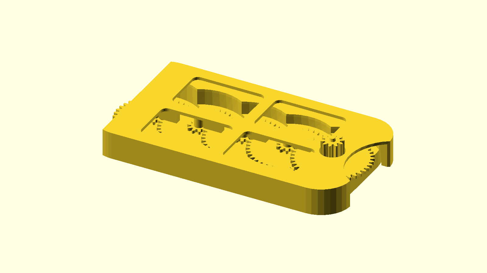
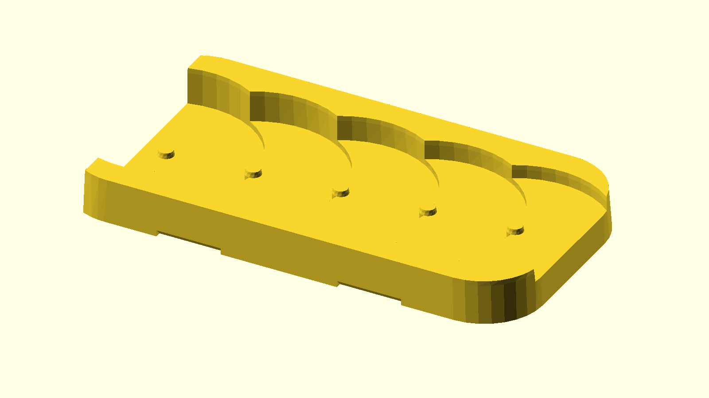
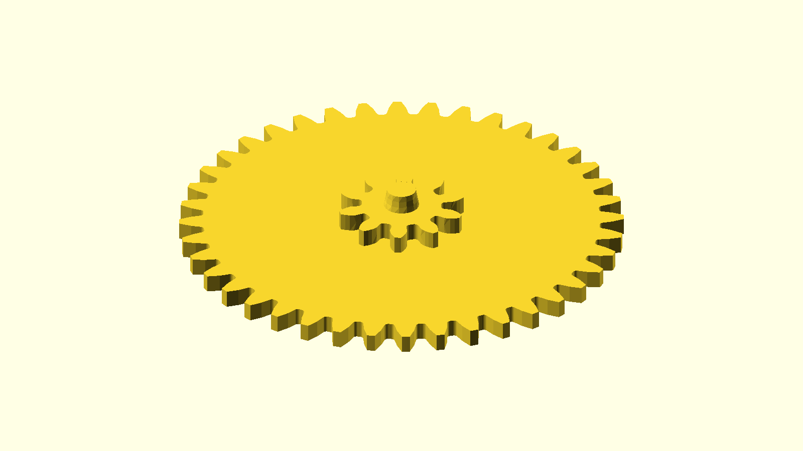

§ Reduction-gear card
pycon2026
A 256:1 compound reduction chain, in a card, deconstructed by Python.
Five stages of 4:1 spur-gear reduction, packed flat into a 78 × 44 mm body. The STEP file is designed in Onshape; everything else — exploded animation, per-part renders, engineering writeups — is regenerated by Python on every push.

uv run stepforge explode


How it works
Five gear stages, 4:1 each, multiplied together: 256 : 1. Spin the input gear with your thumb; the output gear moves a quarter-degree.
The story is told across six short Python-generated explainers. Start with The card in 3D.
- The card in 3D — canonical STEP source and the
stepforgepipeline. - Gear ratios — compound 4:1 × 5 = 256:1, with a thumb-travel intuition (~20.3 m of finger motion per output rotation).
- Decoding the gears from STEP — slice the committed STL, FFT the radial profile, recover tooth count and module from geometry alone.
- Stacking — why a 3-level cycle of hub heights keeps the card thin without the discs colliding.
- Terminology — pinion, module, pitch circle, addendum. The 90 seconds of vocabulary the other pages assume.
- Printing considerations — orientation, chamfers, why each post is its own part.
The Python tools
Onshape as the parametric design surface. Python as the deconstruction layer. GitHub Actions as the build server.
stepforge is a small Click CLI on top of build123d (OpenCascade) and cascadio. Five subcommands:
stepforge inspect- AP242 schema, assembly tree, bounding box, tessellation stats; merges sidecar
.meta.tomlif present. stepforge build- Tessellates STEP → STL or colored GLB (cascadio path preserves Onshape's per-part colors).
stepforge render- Orthographic PNG via the OpenSCAD pipeline (iso / top / edge / front / right presets).
stepforge explode- Decomposes an assembly into per-part STL / GLB / PNG, plus an exploded GLB, an animated GIF, and a manifest.
stepforge assemble- Composes multiple STEP parts into a single assembly from a TOML manifest.
Every file under docs/assets/card/ is regenerated by the
Build Card workflow
on any push that touches the STEP or the stepforge source, then auto-committed back. Push a new Onshape export and the hero animation regenerates within a minute.
Quickstart
$ git clone https://github.com/jmcpheron/pycon2026
$ cd pycon2026
$ uv sync --extra step
$ uv run stepforge inspect jmcpheron-card.step
$ uv run stepforge explode --in jmcpheron-card.step --out /tmp/card/
# → /tmp/card/{exploded.gif, jmcpheron-card.glb, parts/*.{stl,glb,png}, manifest.toml}
The step extra is opt-in — the OpenCascade wheel is ~180 MB. Requirements: Python 3.11+, OpenSCAD on your $PATH, uv.
Things I'd love to chat about at PyCon
If you found this page from a 3D-printed card I handed you in Long Beach — hi. Here's what I'm hoping to talk about. Find me on the floor, or open an issue.
- 3D printing, especially print-in-place mechanisms and the geometry tricks that make them survive a bed-slinger.
- Python ↔ CAD pipelines. Onshape STEP →
cascadio→trimesh→ OpenSCAD → animated GIF, all in CI. - Open-source licensing for physical 3D files. STEP and STL aren't software; MIT covers the code in this repo, the geometry sits in a fuzzier zone.
- Less-permissive licensing for STEP / STL as a hedge against patent trolls and copyright-shaped opportunism — or just friction for the people who'd remix in good faith?
- Devlog-as-build-journal as a way to ship hardware in public.